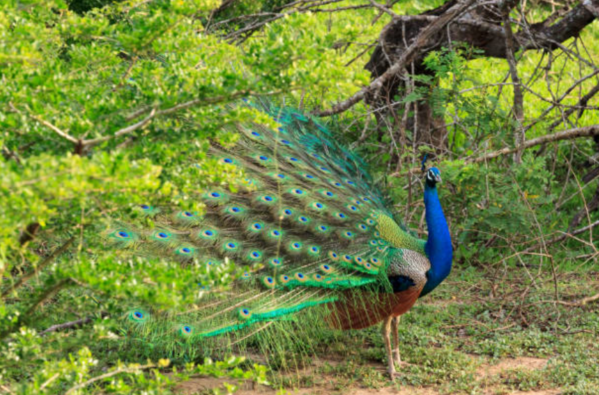
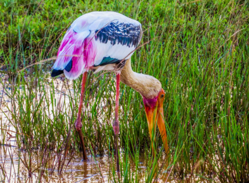
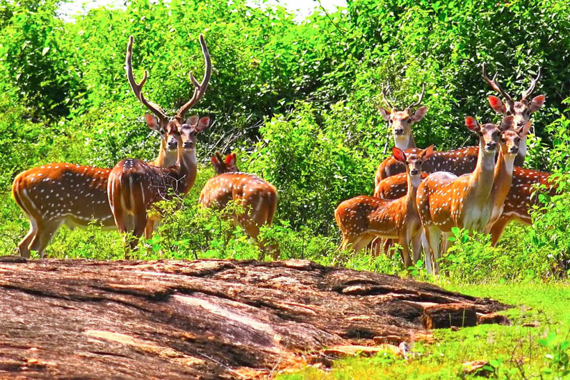
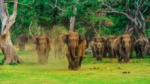
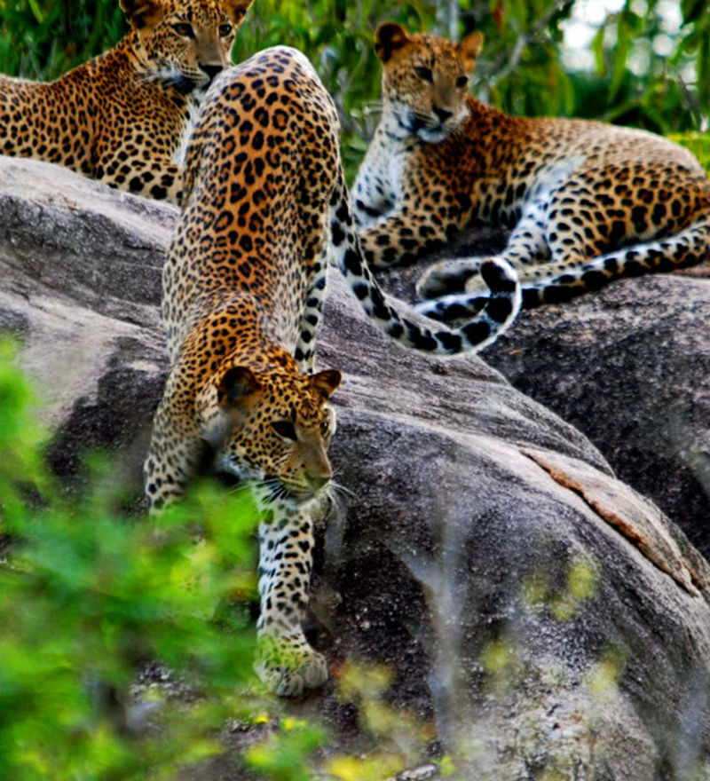

Wild Life
  Yala National Park

The most famous of Sri Lanka’s 22 national parks, is Yala National Park, which covers a vast swathe of countryside in the south-east of the island beyond Tissamaharama. A substantial section of the park is closed to visitors, but the accessible area is home to probably the most varied wildlife in the country, including an impressive elephant population, elusive sloth bears, beautiful birdlife and, most famously, a significant leopard population. Although they’re not easy to spot, the odds of seeing a leopard are reasonably good if you spend some time in the park under the guidance of a reputable park tour operator. The park is best known for its variety of wild animals.
Udawalawe National Park
Udawalawe National Park lies on the boundary of Sabaragamuwa and Uva Provinces, in Sri Lanka. The national park was created to provide a sanctuary for wild animals displaced by the construction of the Udawalawe Reservoir on the Walawe River, as well as to protect the catchment of the reservoir. The reserve covers 30,821 hectares (119.00 sq mi) of land area and was established on 30 June 1972.Before the designation of the national park, the area was used for shifting cultivation (chena farming). The farmers were gradually removed once the national park was declared.Udawalawe is an important habitat for water birds and Sri Lankan elephants. It is a popular tourist destination and the third most visited park in the country.
Wilpattu National Park
Wilpattu National Park (Willu-pattu; Land of Lakes) is a park located on the island of Sri Lanka. The unique feature of this park is the existence of "Willus" (Natural lakes) - Natural, sand-rimmed water basins or depressions that fill with rainwater. Located in the Northwest coast lowland dry zone of Sri Lanka. Wilpattu is the largest and one of the oldest National Parks in Sri Lanka. Wilpattu is among the top national parks world-renowned for its leopard (Panthera pardus kotiya) population.